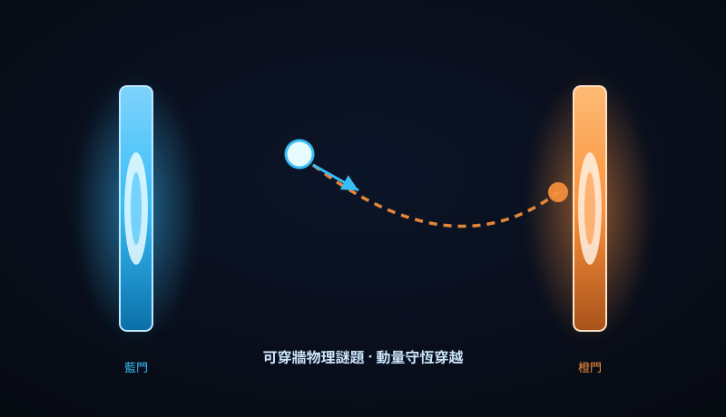

這一頁是「看得見、驗得過」承諾的實體證明。下方把平常藏在程式裡的電腦圖學與物理模擬——包括向《傳送門 2》致敬的可穿牆謎題——整理成您能直接開來玩、能親手驗證的工程範例。每一個，都不只是展示，而是我們真實可以交付的技術能力。
最受歡迎的一組：向《傳送門 2》致敬的物理模擬。我們做出能真的「穿牆」的遊戲：走進藍門就從橘門出來、貼著牆不會卡住、掉進岩漿就出局。這證明我們能處理的不只是網站，而是複雜的即時物理與圖學。

把 Unity / Unreal / Godot / Game Maker / Construct 3 / GDevelop / RPG Maker / Scratch 八套引擎的「編排哲學」萃取成可移植原則，用來升級我們的工具編排技能包。免費引擎（Godot / GDevelop / Scratch / Construct）的無碼哲學——行為附加、事件表、宣告式積木、開源優先——是我們優先挹注心力的方向。
這一區把平常藏在論文裡的物理與數學，翻成主管與團隊都看得懂、且每條聲稱都能被數據打臉的白話筆記。每一篇都自帶圖解與可證偽查核——這正是我們「不黑箱、能親手驗」承諾在知識面的體現。